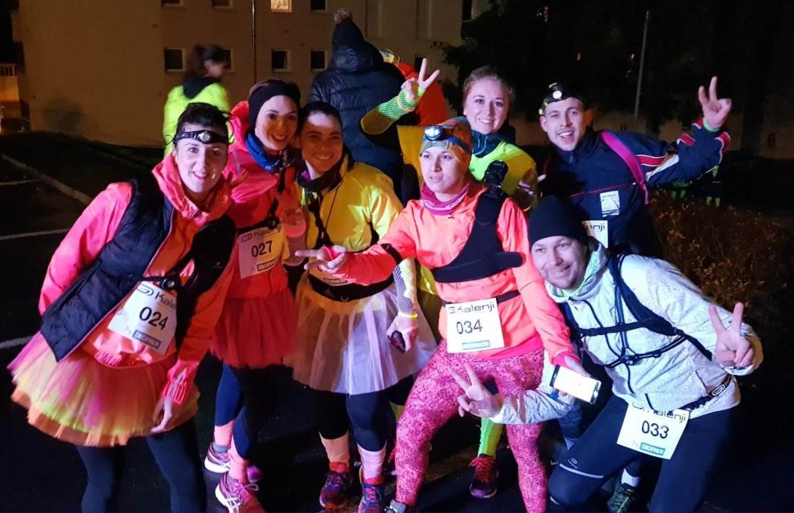

Samedi 23 janvier 2027, à Nesles-la-Montagne. Un trail de nuit de 13,8 km, à la frontale. Départ à 18 h.
Tamp'Trolls
13,8kmLe trail nocturne du club, en autonomie complète. 200 dossards, pas un de plus.
Prendre ce dossardL'Infernal
6heuresSix heures de boucles dans le bois Pierre, à Chierry. Autant de tours que les jambes le permettent.
Voir l'InfernalLa Pénible
3heuresLe même bois et la même boucle, pendant trois heures.
Voir la PénibleLa Cerisiènne
12kmDeux tours et c'est plié : le format trail de la journée.
Voir la CerisiènneDimanche 4 avril 2027, à Chierry. Une boucle de 6 km et 314 m de dénivelé dans le bois Pierre, à refaire encore et encore.
L'Infernal pendant 6 heures, la Pénible pendant 3 heures, la Cerisiènne sur 2 tours.
Pour les trois formats réunis.
À jour avant le 25 mars 2027, sinon pas de dossard.

Démonstration EventLyx : réponses tirées des informations de cette page.